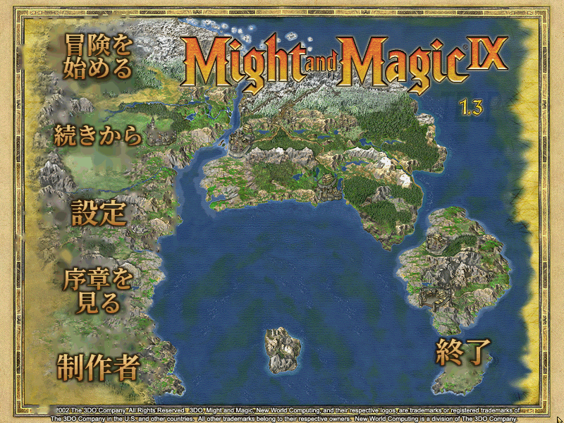
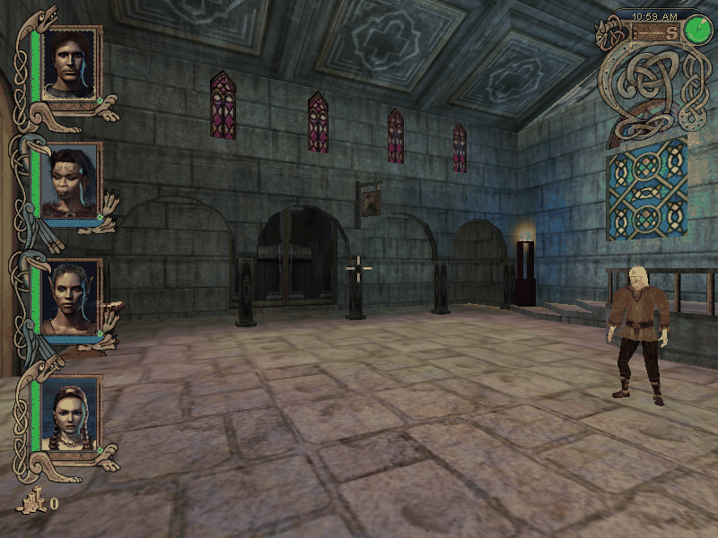
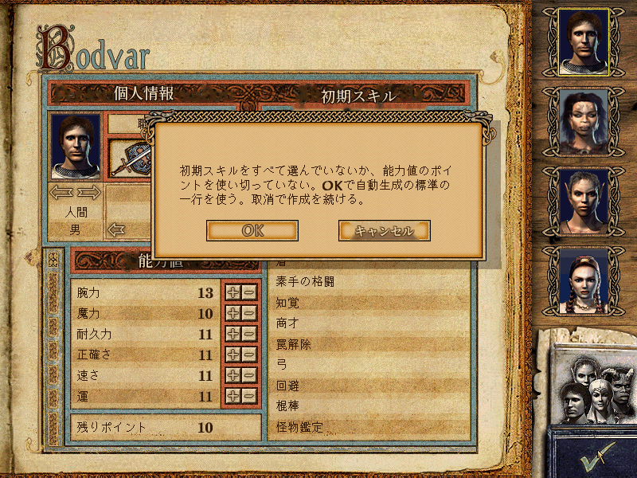
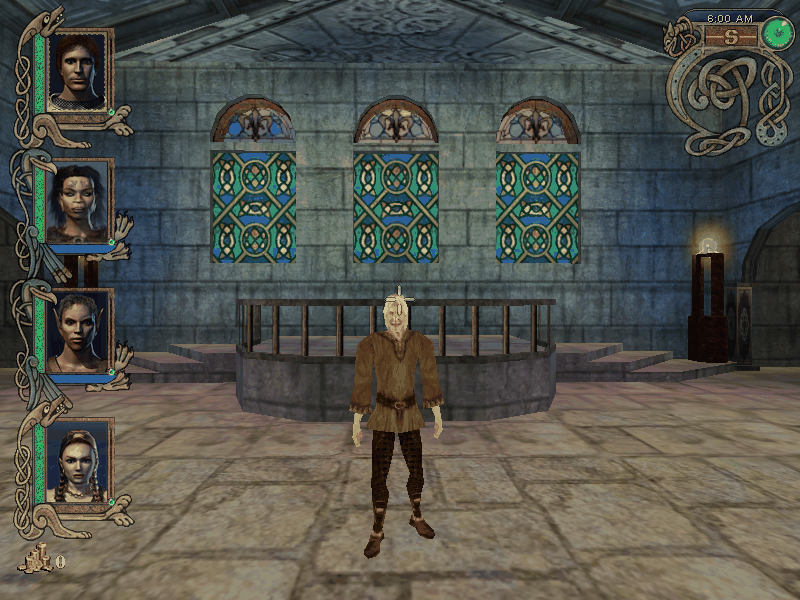
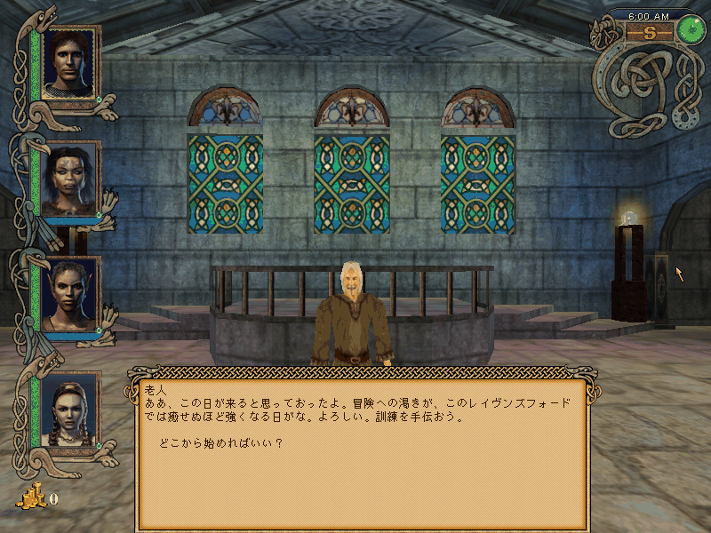
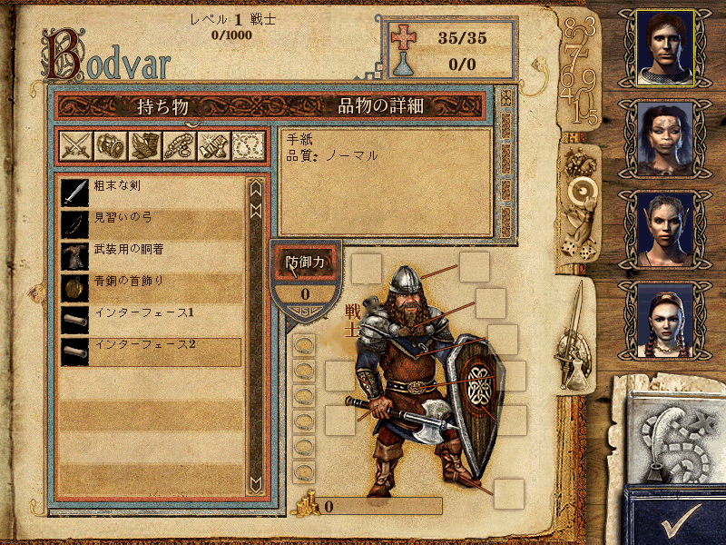

どんなゲーム？
マイト・アンド・マジック9 は、2002年に発表されたシリーズ第9作です。舞台は北の大陸チェディアン。 六つの氏族がそれぞれのヤール（首長）のもとで争い合うなか、東からタムール・レンの率いるベルドニアの大軍が迫ります。 レイヴンズフォードで育った若者たちは、灰の島へ流れ着いたことから、六氏族をひとつにまとめる運命を背負うことになります。
シリーズで初めて 3D エンジンを使った作品で、4 人の仲間を作って冒険に出ます。旅の途中で昇格を重ね、職業を選び分けていきます。
Might and Magic IX
GOG.com 版の「Might and Magic 9: Writ of Fate」を日本語で遊べるようにする、非公式のファンメイドパッチです。 人々との会話、クエストの記録、本や手紙、品物・呪文・スキルの説明、品物・怪物・人物・地名・店の名前、画面の文言まで、ゲームの中の文章を日本語にしています。 タイトル画面のメニューや各画面の見出しなど、絵として描かれた文字も日本語に描き直しました。 ゲームのフォルダで一度実行するだけで日本語になり、外せば英語に戻ります。
マイト・アンド・マジック9 は、2002年に発表されたシリーズ第9作です。舞台は北の大陸チェディアン。 六つの氏族がそれぞれのヤール（首長）のもとで争い合うなか、東からタムール・レンの率いるベルドニアの大軍が迫ります。 レイヴンズフォードで育った若者たちは、灰の島へ流れ着いたことから、六氏族をひとつにまとめる運命を背負うことになります。
シリーズで初めて 3D エンジンを使った作品で、4 人の仲間を作って冒険に出ます。旅の途中で昇格を重ね、職業を選び分けていきます。






MightAndMagic9_JP.zip を展開します。lithtech.exe があるフォルダ）にコピーします。MM9JP.exe を実行します。「完了しました」と出たら Enter キーで閉じます。ゲームを Program Files の下に入れている場合は、MM9JP.exe を「管理者として実行」してください。
ゲームのデータ（*.REZ）は書き換えません。日本語のファイルは data フォルダの中に足されます。
元に戻す.bat を実行すると、足したファイルと dinput.dll を消して英語版に戻ります。セーブデータはそのまま使えます。MM9JP.exe は何も変えずに終わります。dinput.dll を置き換えるものとは同時に使えません。誤訳や不自然な訳に気づいたら、GitHub の Issues で教えてください。